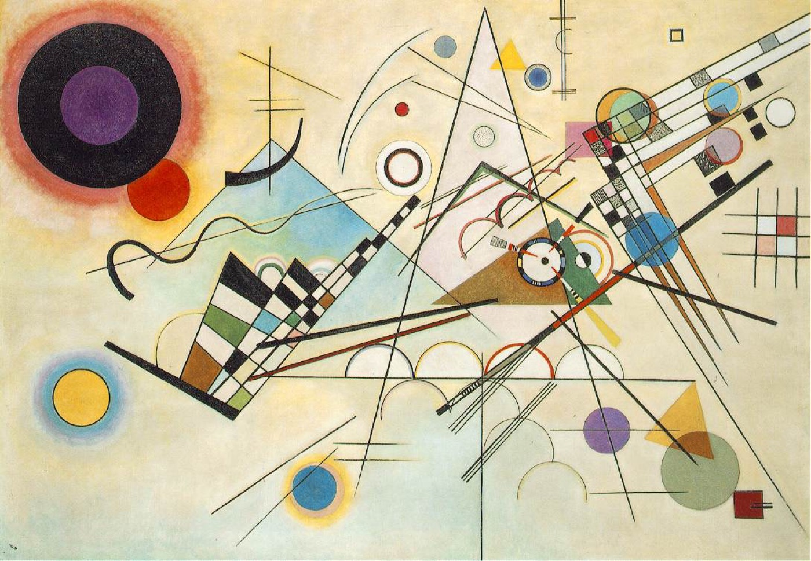

1모방주의얼마나 닮았나
무엇을, 얼마나 사실적으로 나타냈나?
작품이 실제 대상을 있는 그대로 재현했는지 봅니다.
무엇을 묘사했나?모양과 비례빛과 그림자질감
사실적이지 않다면 ‘왜’ 그랬는지도 써요.
같은 작품도 어떤 안경을 쓰고 보느냐에 따라 다르게 보입니다. 모방주의·표현주의·형식주의·맥락주의, 네 개의 안경을 차례로 쓰고 작품을 보면 ‘좋다, 싫다’를 넘어 근거 있는 감상문을 쓸 수 있습니다.
무엇을, 얼마나 사실적으로 나타냈나?
작품이 실제 대상을 있는 그대로 재현했는지 봅니다.
사실적이지 않다면 ‘왜’ 그랬는지도 써요.
어떤 느낌이 드는가?
첫인상과 떠오르는 것, 작가가 전하려는 감정을 읽습니다.
작가의 의도와 내 느낌을 구별해 써요.
어떻게 만들어졌는가?
조형 요소·원리와 재료·기법을 자세히 관찰합니다.
두 가지 이상 찾고, 효과까지 써요.
어떤 시대와 배경에서 나왔는가?
작가의 삶, 시대·사회 배경, 작품이 끼친 영향을 봅니다.
배경을 작품의 의미와 이어서 써요.
강의 영상 「미술 감상 관점」
8학년 때 배운 비평 4단계와 이어 보면 쉽습니다.

형식주의 칸에는 조형 요소와 원리, 재료와 기법을 두 가지 이상 찾아 정확한 용어로 쓰고, 그래서 어떤 느낌(효과)이 나는지까지 씁니다.
▶ 복습 영상 「조형요소와 원리」 보기
이 작품은 상의를 벗은 채 반바지를 입고 쪼그려 앉아 있는 소년을 표현한 작품이다. 소년의 머리카락, 눈동자와 눈썹, 옷, 피부, 근육과 뼈의 질감을 그대로 재현하여 마치 실제 사람과 똑같이 보이도록 했다. 또한 앉아 있는 자세나 팔의 움직임에 따른 근육과 얼굴 표정에 따른 주름까지 세밀하게 묘사하여 진짜 사람이 앉아 있는 것 같은 착각을 불러일으킨다.
전시장 배경이 보이지 않았다면 작품이라고 생각하지 못했을 정도로 살아 있는 사람과 똑같이 만들어졌다. 불안한 표정과 잔뜩 웅크리고 있는 자세가 마치 소인국에 잡혀 온 거인처럼 보이기도 한다.
이 작품은 실제 사람의 5배 정도 크기이지만 신체의 비율은 실제 사람과 같다. 작가는 피부, 머리카락, 눈동자, 손톱과 발톱, 웅크린 자세에서 두드러지는 근육과 뼈의 형태와 질감을 사실적으로 묘사했다. 이를 위해 실리콘 위에 섬유 코팅을 하고, 그 위에 머리카락, 눈썹, 속눈썹 등을 심었다. 웅크리고 있는 하체와, 무릎에 기대어 머리를 살짝 감싸고 있는 팔이 무게의 중심을 잡아 준다.
론 뮤익은 전문적인 미술 교육을 받지 않았으나, 장난감을 만드는 아버지의 영향으로 영화와 TV 광고의 모형을 만드는 일을 하다가 우연히 찰스 사치의 눈에 띄어 조각가로 데뷔하였다. 그는 대표적인 극사실주의 조각가로, 사실적인 인물 묘사를 통해 인간의 삶과 죽음을 섬세하게 표현한다. 극사실주의는 눈으로는 볼 수 없는 미세한 피부 조직 따위를 기계적으로 확대해 충격을 주고, 극도로 사실적인 표현을 통해 오히려 사실주의의 허구성을 드러낸다.
연습할 때는 책과 인터넷을 찾아봐도 됩니다. 다 쓰고 나서 예시 답안을 펼쳐 비교하세요.

1889년, 요양원 창밖 풍경을 바탕으로 그린 밤하늘. 잘 그린 그림일까요? 네 개의 안경으로 차례로 보며 써 봅니다.
1. 모방주의 — 이 작품은 밤하늘과 별, 달, 언덕 아래의 작은 마을과 교회, 앞쪽의 커다란 사이프러스 나무를 그렸다. 마을과 나무는 알아볼 수 있지만 사진처럼 사실적이지는 않다. 하늘은 소용돌이처럼 휘감기고, 별과 달은 실제보다 훨씬 크고 밝은 빛 무리로 표현되어 있다. 고흐는 눈에 보이는 밤하늘을 그대로 옮기기보다 자신이 느낀 하늘을 그렸다.
2. 표현주의 — 소용돌이치는 하늘을 보면 바람이 거세게 부는 듯 마음이 술렁인다. 고요하게 잠든 마을과 달리 하늘은 살아 움직이는 것 같아, 외로움과 함께 무언가를 간절히 바라는 마음이 느껴진다. 하늘로 솟은 검은 사이프러스 나무는 불꽃처럼 보여 불안하면서도 강한 생명력을 느끼게 한다.
3. 형식주의 — 짙은 파란색과 밝은 노란색의 보색 대비가 별빛을 강조한다. 짧고 굵은 곡선 붓질이 반복되며 하늘 전체에 율동과 동세를 만든다. 세로로 솟은 사이프러스 나무와 가로로 펼쳐진 마을이 대비를 이루며 화면의 균형을 잡는다. 물감을 두껍게 바른 기법 덕분에 거친 질감이 살아 있다.
4. 맥락주의 — 고흐는 1889년, 마음의 병으로 프랑스 생레미의 요양원에 머물며 창밖 풍경을 바탕으로 이 그림을 그렸다. 힘든 시기에도 그는 밤하늘과 별에서 위로와 희망을 찾으려 한 것으로 보인다. 대상을 사실대로 그리기보다 감정을 색과 붓질로 드러낸 그의 방식은 뒤의 표현주의 화가들에게 큰 영향을 주었다.

불상이 카메라에 찍힌 자기 모습을 텔레비전으로 바라보는 비디오 설치 작품. 네 관점으로 혼자 써 봅니다.
1. 모방주의 — 「TV 부처」는 실제 불상과 텔레비전, 비디오카메라로 이루어진 설치 작품이다. 앉아 있는 나무 불상 앞에 둥근 텔레비전이 놓여 있고, 카메라가 불상을 찍어 그 모습을 실시간으로 화면에 보여 준다. 대상을 그려서 흉내 낸 것이 아니라 실제 사물과 실제 영상을 그대로 사용했다.
2. 표현주의 — 불상이 화면 속 자기 얼굴을 조용히 바라보는 모습이 명상하는 것처럼 차분하다. 동시에 텔레비전 앞을 떠나지 못하는 현대인의 모습 같아 웃음이 나기도 한다. 나는 이 작품에서 ‘나는 누구인가’를 묻는 고요한 질문을 느꼈다.
3. 형식주의 — 불상과 화면 속 불상이 마주 보며 대칭과 반복을 이룬다. 칠이 벗겨진 오래된 나무 불상의 거친 질감과 매끈한 플라스틱 텔레비전의 질감이 대비된다. 카메라와 텔레비전을 바로 이어, 불상이 자신을 보고 그 모습이 다시 화면에 비치는 순환 구조를 만들었다. 빈 공간에 사물 몇 개만 둔 단순한 배치가 시선을 불상과 화면 사이로 모은다.
4. 맥락주의 — 1970년대는 텔레비전이 집집마다 퍼지던 시기였다. 백남준은 동양의 전통 종교를 상징하는 불상과 서양의 최신 기술인 텔레비전을 마주 보게 하여 동양과 서양, 과거와 현재의 만남을 보여 준다. 비디오 아트의 대표작인 이 작품은 미디어 시대에 우리가 화면 속의 나를 어떻게 바라보는지 생각하게 한다.
“이 작품은 ___을(를) ___처럼 실제와 비슷하게(다르게) 표현했다. 특히 ___ 부분에서 ___이 느껴진다.”
“작가는 ___ 색과 ___ 붓질로 ___한 감정을 나타낸 것 같다. 나는 이 작품에서 ___을(를) 느꼈다.”
“이 작품은 ___(요소)를 ___(원리)하게 배치하여 ___한 느낌을 준다.”
“이 작품이 만들어진 ___년에는 ___한 일이 있었다. 그래서 이 작품은 ___을(를) 말하고 있다고 생각한다.”
평가 날에는 네 작품 가운데 하나를 제비뽑기로 뽑아, 그 작품의 도판만 보고 4가지 관점로 감상문을 씁니다. 어떤 작품이 나와도 쓸 수 있도록 연습 작품으로 충분히 연습해 두세요.